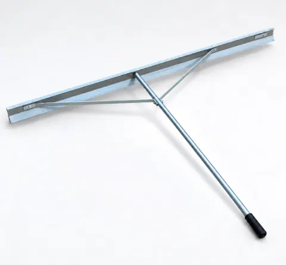
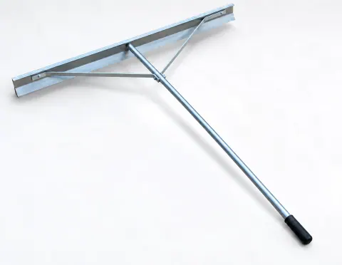
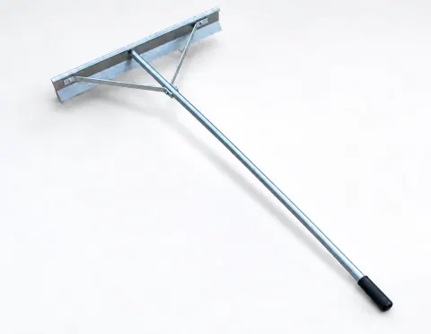
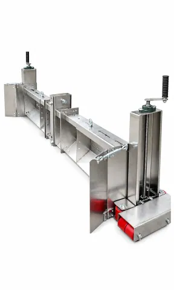
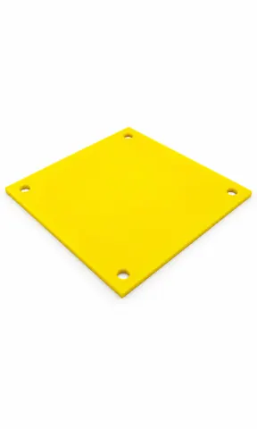
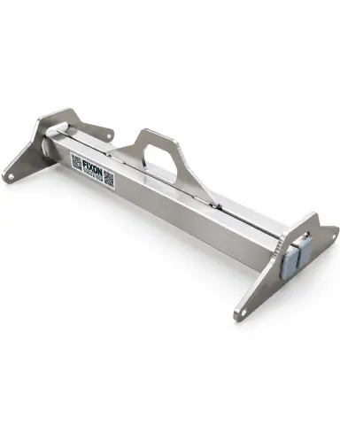
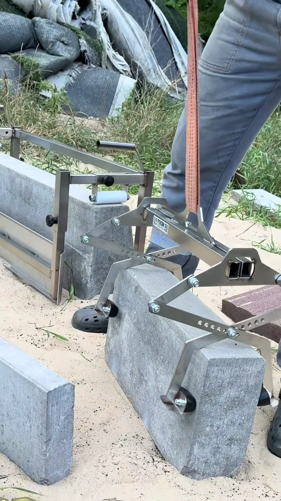
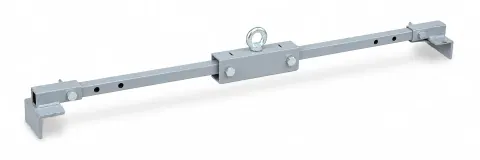
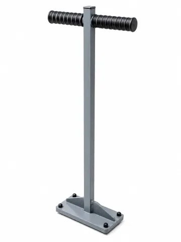

Scopri come si è ampliata la gamma. Scegli gli utensili adatti ai lavori dei tuoi clienti.

PROFILFIX 200FIXON-068-PROFILFIX-200Nei nostri materiali da: 2026-09

PROFILFIX 150FIXON-067-PROFILFIX-150Nei nostri materiali da: 2026-09

PROFILFIX 100FIXON-066-PROFILFIX-100Nei nostri materiali da: 2026-09

MONOX 3.0FIXON-065-MONOX-3-0Nei nostri materiali da: 2026-09

HARDTAP PAD 250 x 250FIXON-064-HARDTAP-PADNei nostri materiali da: 2026-09

SYSTEM ADAPTERFIXON-063-SYSTEM-ADAPTERNei nostri materiali da: 2026-09

GRIX SYSTEM ADAPTERFIXON-062-GRIX-SYSTEM-ADAPTERNei nostri materiali da: 2026-09

LiftX PROFIXON-061-LIFTX-PRONei nostri materiali da: 2026-09

HARDTAP MINI 8 kgFIXON-060-HARDTAP-MINI-8-KGNei nostri materiali da: 2026-09
Il mese indica la prima versione trovata dei nostri materiali in cui compare il prodotto.